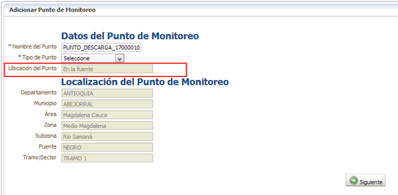
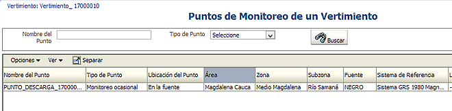
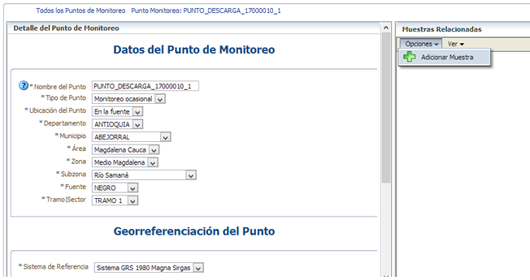

Para monitorear la carga contamienante de un vertimiento el sistema requiere la creación de un punto de monitoreo asociado al punto de descarga. Es por ello que el sistema crea un nuevo punto "En la fuente" al cual le asocia toda la información del vertimiento seleccionado incluyendo las muestras.

De clic en el botón siguiente para registrar el punto y continuar con el registro de muestras desde el formulario de edición del punto creado. Seleccione el punto creado y de clic en el menú secundario "Opciones", "Consultar / Editar"

El sistema le presnetará los datos del punto de monitoreo con la opcion de asociar muestras:

Para crear puntos de monitoreo "Aguas arriba" o "Aguas abajo" repita el proceso desde el vertimiento.